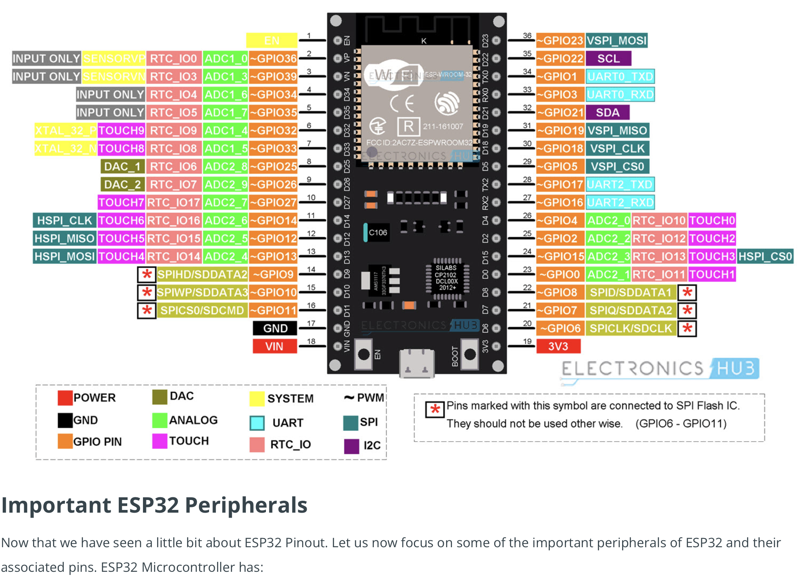

Work with a partner or group of 3. Program one or more microcontroller(s) to obtain and respond to information from the internet or radio. Your project should include at least one input and one output.
For this assignment, I worked with Bernie and we wanted to do something involving the OpenAI API for chat GPT, and the OLED screens connected to an ESP32. The original idea was to use a sort of feedback loop with chat GPT itself to create a movie script dialogue because we thought this would lead to funnier responses than ai itself generating a script in a single go. This however proved difficult because of the length of responses themselves, also because we needed a better input method. Another difficulty was that our first screen was broken, which led to many confused hours trying to figure out what was wrong.
Here are the key lessons that we learned
- ChatGPT API requires a cash balance for tokens to be charged
- Was able to use my (Bernie's) phone hotspot for the networking practice outside of the lab
- We needed to use the pinout diagram in order to use the monitor. We were not able
to get the monitor to work, until we used the diagram.

- Our first monitor was broken
- Pins for the ESP Room 32 to monitor were: Pin 21 for SDA, pin 22 for SCL
Useful links:
This video gave us some sample code and how to get API from Open AI: video.
Sample Code.
Pinout diagram.
#include
#include
#include
#include
#include
// Replace with your network credentials
const char* ssid = "**********";
const char* password = "********";
// Replace with your OpenAI API key
const char* apiKey = "************";
String apiUrl = "https://api.openai.com/v1/chat/completions";
String finalPayload = "";
bool initialPrompt = true;
bool gettingResponse = true;
HTTPClient http;
#define SCREEN_WIDTH 128 // OLED display width, in pixels
#define SCREEN_HEIGHT 64 // OLED display height, in pixels
#define OLED_RESET -1 // Reset pin # (or -1 if sharing Arduino reset pin)
#define SCREEN_ADDRESS 0x3C ///< See datasheet for Address; 0x3D for 128x64, 0x3C for 128x32
Adafruit_SSD1306 display(SCREEN_WIDTH, SCREEN_HEIGHT, &Wire, OLED_RESET);
void setup() {
// Initialize Serial
Serial.begin(9600);
// Initialize OLED display
if (!display.begin(SSD1306_SWITCHCAPVCC, SCREEN_ADDRESS)) {
Serial.println(F("SSD1306 allocation failed"));
for (;;) ; // Don't proceed, loop forever
}
// Connect to Wi-Fi network
displayMessage("Connecting to WiFi...");
WiFi.mode(WIFI_STA);
WiFi.begin(ssid, password);
while (WiFi.status() != WL_CONNECTED) {
delay(1000);
}
displayMessage("Connected");
// Begin HTTP client
http.begin(apiUrl);
}
void loop() {
if(Serial.available() > 0)
{
String prompt = Serial.readStringUntil('\n');
prompt.trim();
Serial.print("USER:");
Serial.println(prompt);
gettingResponse = true;
displayMessage("Connecting to ChatGPT...");
chatGptCall(prompt);
}
delay(1);
}
void chatGptCall(String payload)
{
http.addHeader("Content-Type", "application/json");
http.addHeader("Authorization", "Bearer " + String(apiKey));
if(initialPrompt)
{
finalPayload = "{\"model\": \"gpt-3.5-turbo\",\"messages\": [{\"role\": \"user\", \"content\": \"" + payload + "\"}]}";
initialPrompt = false;
}
else{
finalPayload = finalPayload + ",{\"role\": \"user\", \"content\": \"" + payload + "\"}]}";
}
while(gettingResponse)
{
int httpResponseCode = http.POST(finalPayload);
if (httpResponseCode == 200) {
String response = http.getString();
// Parse JSON response
DynamicJsonDocument jsonDoc(1024);
deserializeJson(jsonDoc, response);
String outputText = jsonDoc["choices"][0]["message"]["content"];
outputText.remove(outputText.indexOf('\n'));
// Display the response on the OLED screen
display.clearDisplay();
display.setTextSize(1);
display.setTextColor(SSD1306_WHITE);
display.setCursor(0, 0);
display.println("CHATGPT:");
display.println(outputText);
display.display();
String returnResponse = "{\"role\": \"assistant\", \"content\": \"" + outputText + "\"}";
finalPayload = removeEndOfString(finalPayload);
finalPayload = finalPayload + "," + returnResponse;
gettingResponse = false;
}
else {
//Serial.printf("Error %i \n", httpResponseCode);
// Serial.println("Trying again");
}
getDelay();
}
}
String removeEndOfString(String originalString)
{
int stringLength = originalString.length();
String newString = originalString.substring(0, stringLength - 2);
return(newString);
}
void displayMessage(String message) {
display.clearDisplay();
display.setTextSize(1);
display.setTextColor(SSD1306_WHITE);
display.setCursor(0, 0);
display.println(message);
display.println("Please type message to ChatGPT");
display.display();
}
void getDelay(){
unsigned long initialMillis = millis();
while ((initialMillis + 5000) >= millis()) {
}
}